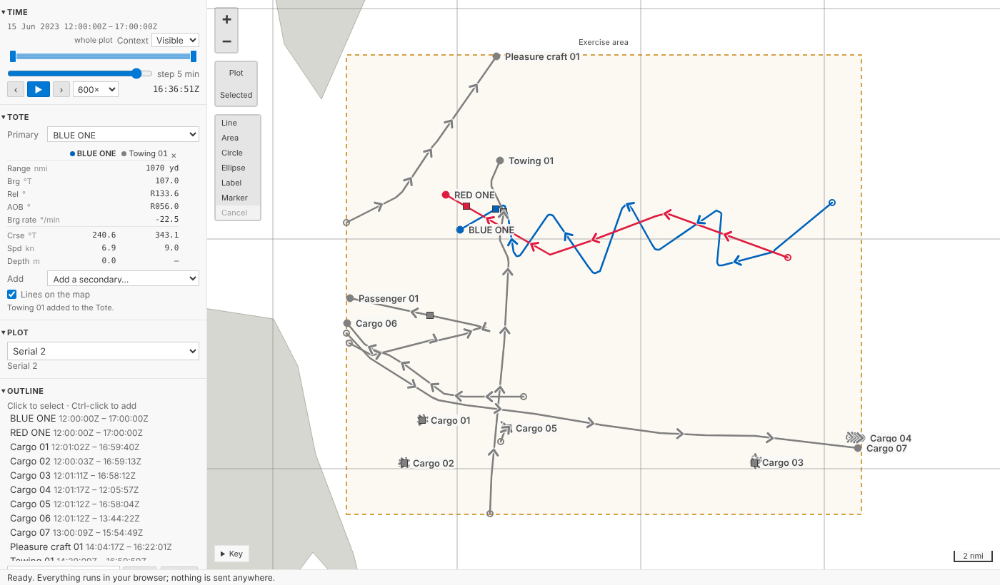
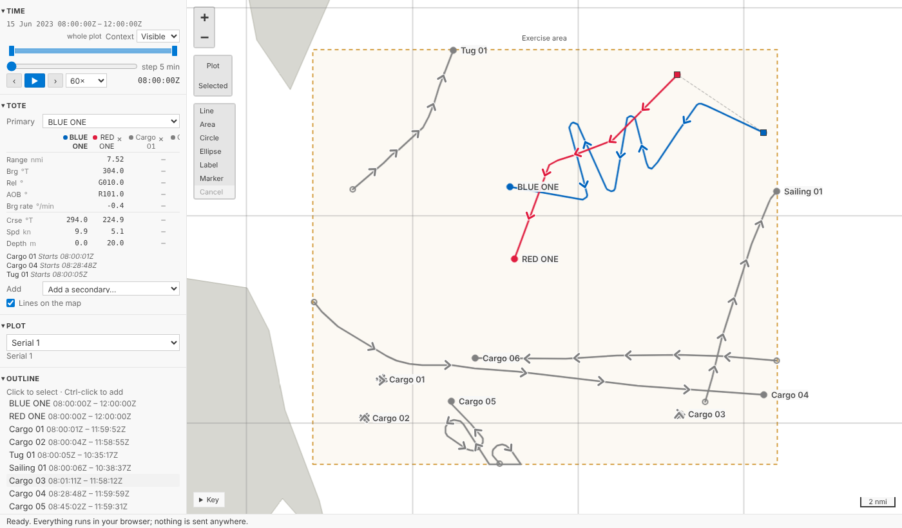
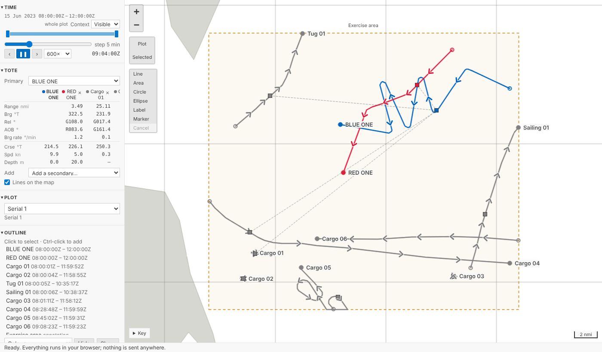
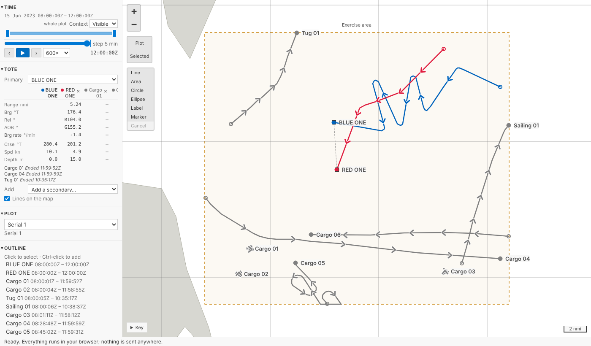
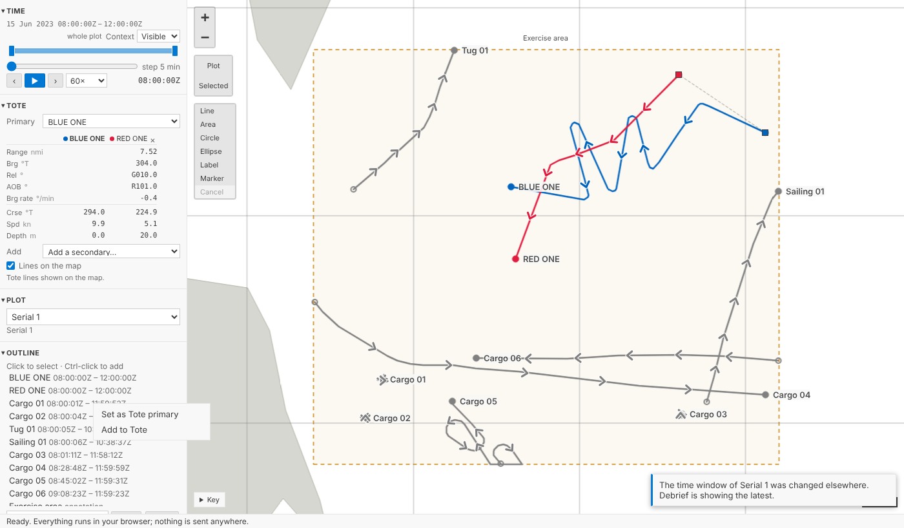
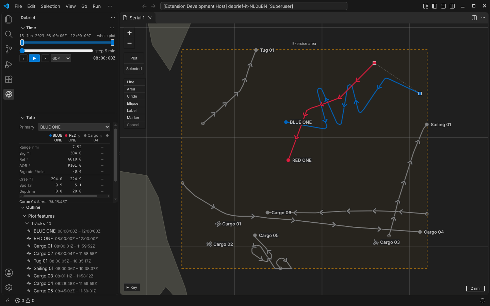
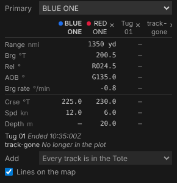

The Tote¶
The Tote is back. Choose a primary track, usually your own ship, and add the secondaries you want to watch: for each one the Tote gives the range, the true bearing, the relative bearing, the angle on the bow and the bearing rate from the primary, and its own course, speed and depth, at current time. On the map, a thin line joins the primary to each secondary. Drag current time, step it or press play, and the values keep pace. It's in VS Code's sidebar under Time, and in the playground under the time controller. In the playground every panel down the side now folds away by its heading, as the Tote's does, and your browser remembers which you folded.
The playground pictures come from the playground test, which plays the demo below in a browser with the mouse, a finger and the keyboard. The VS Code pictures come from the integration test, which drives the real VS Code with the real Python tool service.
What it shows¶
Legacy Debrief's Tote listed, for the primary and each secondary, the same few measures, and that is the core of the new one, with legacy's two optional ones, angle on the bow and bearing rate, in it from the start:
| Measure | From | Written |
|---|---|---|
| Range | primary to secondary | in your length unit: 3.49 nmi; close in, in yards: 1070 yd |
| Bearing | primary to secondary | true, three figures: 322.5°T |
| Relative bearing | primary to secondary, from its head | red to port, green to starboard: R081.3°, G108.0° |
| Angle on the bow | the secondary, as the primary sees it | red or green, as relative bearing: G135.0° |
| Bearing rate | primary to secondary, how fast the bearing changes | degrees a minute, right positive: -0.8°/min |
| Course, speed, depth | each track | 226.1°T, 5.0 kn, 20.0 m |
It's laid out as legacy Debrief's Tote was: a row for each measure, a column for each track. The row headings carry the units, Range nmi, Brg °T, Spd kn, so the cells hold just the figures, right-aligned and lined up. The primary's column comes first, its name in bold, with its own course, speed and depth; then a column for each secondary, its colour, name and × at the top. Units and decimals are your display settings, the same as everywhere else in Debrief, with one exception the product owner asked for: if your lengths are in nautical miles, a range under a mile is in whole yards, 60 yd rather than 0.03 nmi, as analysts call close ranges, and back to 1.00 nmi from a mile out. A close range is the one cell that shows a unit, since it isn't the heading's. Bearing rate keeps your angle decimals, one by default. A track with no depth recorded shows a dash, not a zero.


A sidebar, a demo's side column or a phone hasn't room for every track, so the tracks scroll sideways inside the table while the row headings stay put; the page itself never does. Long names are cut short, in full on hover. We first had a layout that fitted each secondary into three short lines with labelled values; the product owner looked at it on a phone, called it ugly, and pointed out that with table headings you don't need labelled fields. Fair point, and legacy Debrief had got it right all along.
Where a track is, now¶
A Tote is only useful if its numbers agree with the map. Each track's square on the map at current time sits on the geodesic between the fixes either side, in proportion to time; the Tote places each track in exactly the same way, and a shared set of test cases holds the map's code and the Python to the same positions, in the Arctic and across the antimeridian included. The range you read is the range between the two squares.
Course, speed and depth are what the platform recorded at the fixes either side, interpolated the same way, with course going the shorter way round through north (from 350° to 010° passes 000°, not 180°). A reversal has no shorter way round: between fixes at 000° and 180°, half way is neither 090° nor 270°, and the ship never steered either, so the Tote gives the course of whichever fix is nearer in time. A track with no recorded courses, such as a sketched one, gets its course and speed from its positions instead.

When a track has no data at current time, its column is dashes and the Tote says why under the table rather than leaving you guessing: Starts 08:28:48Z, or Ended 10:35:17Z.

On the map¶
The map shows which tracks the Tote is comparing: a thin dashed line, in a muted colour from your theme, from the primary's square to each secondary's at current time. The lines move as current time does, and follow the geodesic, so each is exactly the range the Tote gives. Lines on the map, under Add, turns them off, for the plot, the same way the tracks are chosen: saved with it, never a step.
Choosing tracks¶
Primary is a list at the top of the Tote; Add is a list beneath it, and each secondary has a × at the top of its column to remove it; from the keyboard, Tab to it and press Enter or Delete. From the outline, a track's menu has Set as Tote primary, Add to Tote and Remove from Tote: right-click it, press and hold it on a tablet, or press Shift+F10. In VS Code those act on every track you've selected, so adding five AIS tracks is one menu choice.

Saved with the plot, but not a step¶
Which tracks the Tote compares is a choice about how you're looking at the plot, not a change to it. We put it where the product owner put the time window: in the plot file's island, the part that travels with the plot but sits outside its history. Send the plot to a colleague and they open the same Tote. But choosing tracks is never a step in History, Ctrl+Z never changes it, and it can never conflict with a change to the plot's content. If a colleague changes the Tote's tracks while you do, Debrief shows theirs and tells you, rather than overwriting either. Legacy Debrief, as it happens, made the same call: it kept its Tote's tracks in the GUI part of a plot file, beside the data.
Fast enough to play¶
A Tote has to keep pace with current time: the requirement says within 100 ms. The values are worked out in Python, where all of Debrief's measurement lives, so each change of current time is a request to Python. In the first phase we measured that architecture and found it fast enough; now we've measured the real thing:
| Where | Typical | 95% within |
|---|---|---|
| VS Code, through the tool service | 5 ms | 10 ms |
| The playground, Python in your browser | 7 ms | 15 to 20 ms |
Two things keep it there. The tracks are prepared once and kept until the plot changes, so a request does a few interpolations and geodesics, not a read of the plot. And the Tote never queues: it sends one request, and when the answer comes, one more for wherever current time has got to by then. Playing at 3600× can't build a backlog, and the table is never more than one answer behind. Those numbers come from checks that run with every change, so if the Tote ever slows down, we'll see it.
In VS Code¶
The Tote view sits below Time in the Debrief sidebar, folded until you first use it; the outline's menu opens it.


Measure groups¶
The SRD says the Tote is a view onto a measure group: a named set of measures for a mode of analysis, which a study's lead analyst defines and keeps in the study catalogue, so every plot in the study shows the same Tote. This post's Tote shows the core group. The schema and the tool service already describe groups and their measures, and the Tote shows whatever group it is given, so the next part adds study groups, and measures beyond the core, without changing the view.
For agents¶
debrief/tote with a time (and, if you like, the tracks) returns the values, in metres, degrees and metres per second; debrief/measure_groups lists what can be measured; and debrief/set_view with a tote member chooses the tracks, as the Tote view does.
Try it¶
Choose BLUE ONE as the primary, add RED ONE and a cargo ship, and press play:
Not yet¶
- Study measure groups, kept in the study catalogue, and measures beyond the core.
- A heading separate from course, for relative bearing when a platform crabs across a current.
- A depth setting. Depths are in metres (feet where your lengths are), to one decimal.